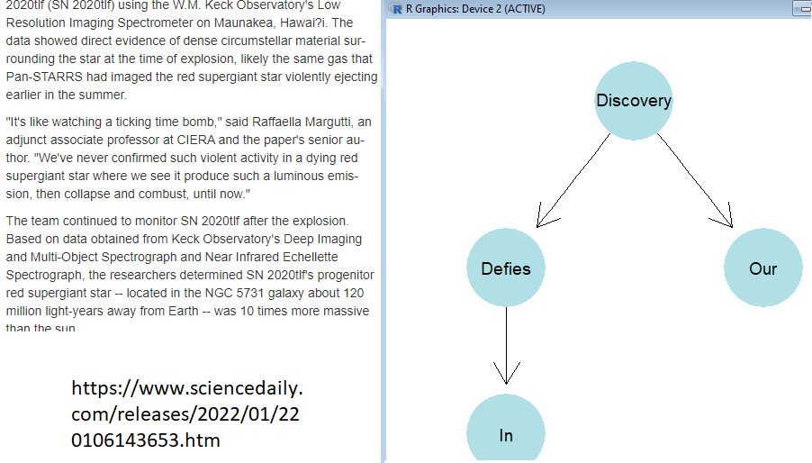

In this article, we see how to ontology from a web source. To this end, R package has been used to get web source and process it. First we need to use the commands below in order to install following R packages: 1. install.packages("rvest") 2. install.packages ("stringr") 3. install.packages (rvest) To create the ontology and design some plots, the packages above should be installed in R GUI. 1. install.packages("ontologyIndex") 2. install.packages ("ontologyPlot") 3. install.packages (“rlist”) To get web source and write to a txt file some R codes should be run as follows: library("stringr") library(rvest) simple <- read_html("https://www.sciencedaily.com/releases/2022/01/220106143653.htm") yeni <- simple %>% html_nodes("p") %>% html_text() file="C:/Users/maruf/Desktop/pca2.txt" write.table(yeni,file="C:/Users/maruf/Desktop/pca2.txt",sep="\t") con <- file('C:/Users/maruf/Desktop/pca2.txt',open="r") # read file contents data1 <- readLines(con) # close the connection close(con) tablo2 <- str_split(data1, " ") write.table(tablo2[4],file="C:/Users/maruf/Desktop/pca21.txt",sep="\t") write.table(tablo2[5],file="C:/Users/maruf/Desktop/pca22.txt",sep="\t")
To read the text files, executes the codes below: ########################### con <- file('C:/Users/maruf/Desktop/pca21.txt',open="r") # read file contents data2 <- readLines(con) # close the connection close(con) #################################### con <- file('C:/Users/maruf/Desktop/pca22.txt',open="r") # read file contents data3 <- readLines(con) # close the connection close(con) ####################### data2 <- data2[1:56] write.table(data2,file="C:/Users/maruf/Desktop/pca21.txt",sep="\t") write.table(data3,file="C:/Users/maruf/Desktop/pca22.txt",sep="\t") To create the ontology, run the following lines: library("ontologyIndex") library("ontologyPlot") library("rlist") matris <- list("elements") ##get ancestors fileName <- "C://Users/maruf/Desktop/pca21.txt" conn <- file(fileName,open="r") linn <-readLines(conn) for (i in 1:length(linn)){ matris <- list.append(matris,linn[i]) print(linn[i]) } close(conn) matris <- matris[-1] #get childs x <- c() fileName <- "C://Users/maruf/Desktop/pca22.txt" conn <- file(fileName,open="r") linn <-readLines(conn) for (i in 1:length(linn)){ x <- append(x,linn[i]) print(linn[i]) } close(conn) names(matris) <- x univ_superclasses <- matris univ_ontology <- ontology_index(parents=univ_superclasses) unclass(univ_ontology) hypo <- c("discovery","defies","in","our") onto_plot(univ_ontology,term_sets=hypo,width=1,fontsize=14,fixedsize="true") ######################## ################## In the end, you get the right side of the following figure: 